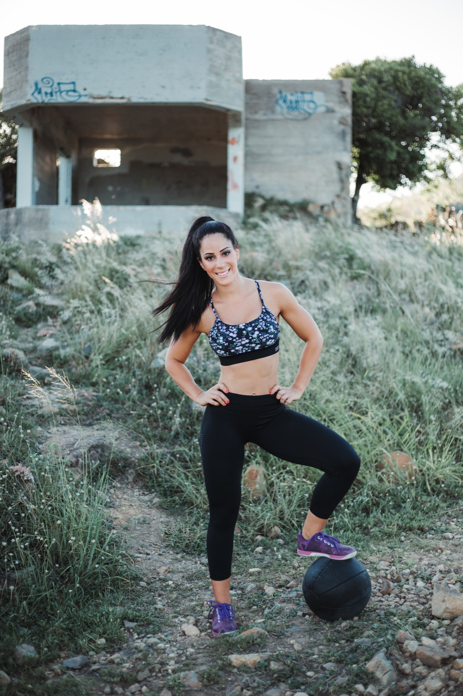
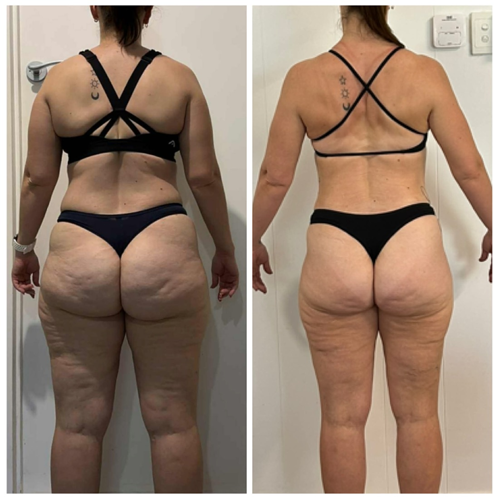
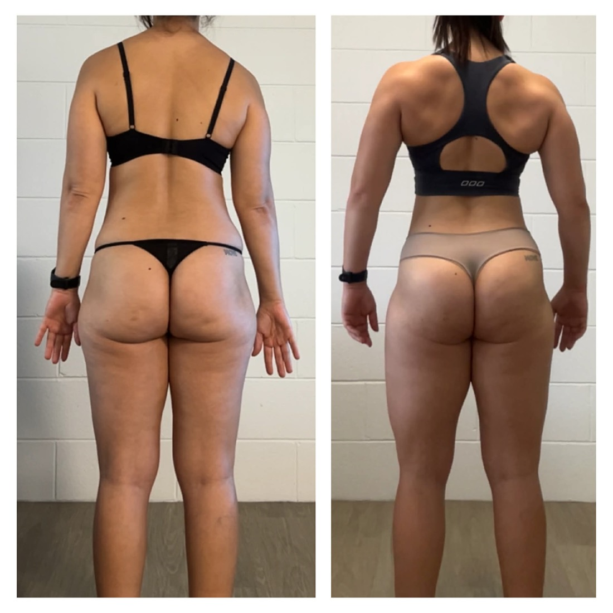

Nutrition · Strength · Habits
Real change, without the yo-yo dieting.
Evidence-based nutrition & strength coaching for women 35–60 — finally understand your body and build habits that last.
Evidence-based nutrition & strength coaching for women 35–60 — finally understand your body and build habits that last.
No more under-eating, over-training and burning out. Just the fundamentals that actually move the needle.
Nutrition is ~90% of results. We fix what's on your plate before anything else.
Learn to eat for life — moderate maintenance over endless deficits.
Hormones, cycle and recovery — coaching designed around female physiology.
Train 3 days, recover well, and build habits that hold for good.

I'm a Bachelor-qualified Nutritionist in Brisbane. I've watched too many women bounce between crash diets, under-eat, over-train and end up exhausted. My job is to teach you the science — simply — so you never need another "diet" again.
— Rachel, Move Inspiring Change
Members get a clean, simple hub: breakfast, lunch and dinner recipes, your current program, weekly progress, and the private community — all in one place.
No filters, no crash diets — just consistent, evidence-based coaching.

"I finally understand food. I'm leaner, stronger and not obsessing anymore."

"More muscle, less stress, and habits that actually stuck this time."
women coached to lasting results
A 6–9 month transformation for women 35–60 — nutrition, strength and habit mastery, with weekly check-ins. The last "diet" you'll ever need.
Explore The Strong Method